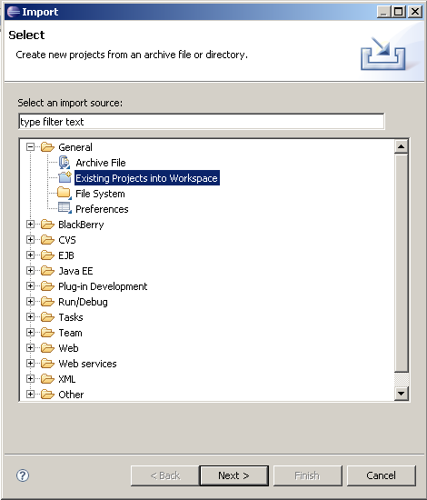
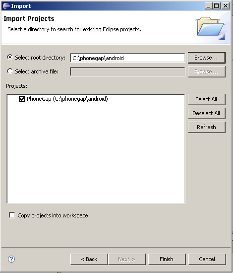
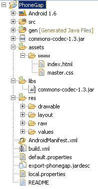
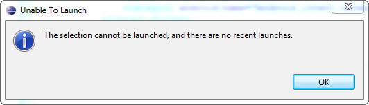
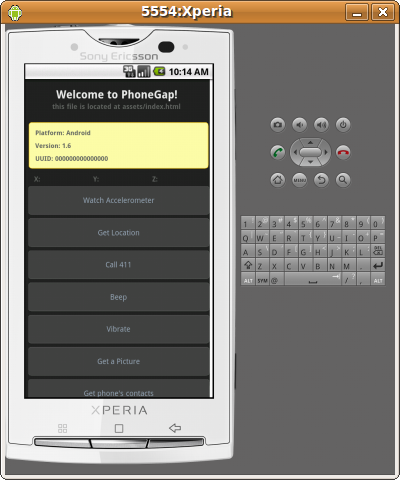

First, download PhoneGap from the website, and unzip it a directory. Then, open Eclipse, and go to File -> Import, which opens the Import Project Dialog, and select General -> Existing Projects into Workspace.
Once this is done, select the location of your Android PhoneGap Installation, and Click Finish.
In Eclipse, you sould see your PhoneGap Project.
Click the Run button in Eclipse, it is the button that looks like "Play". When you run this project, you should the dialog box to Run As.., choose Android Application. You may get the unable to launch dialog, this can happen if you have the Android 1.6 highlighted when you try to run the project. Just select the project folder and click run.
If you have done everything correctly, there should be an Application that loads up and looks similar to the application below. It should be noted that testing with an actual devices is preferrable to the Emulator for many reasons, since you will have access to real Accelerometer, Geolocation, Beep and Vibrate functionality. However, for testing browser events, and browser rendering issues, the Emulator fills theses tasks well.
Refer to the PhoneGap API Documentation for the device functionalities that are exposed (such as Geolocation, Vibration, Contacts, and others).